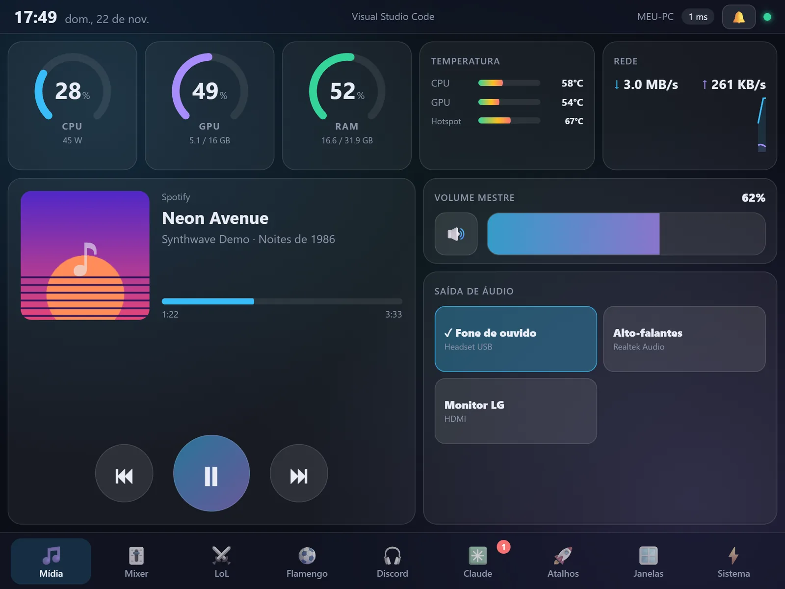

Mixer de verdade, por app.
Fader para Spotify, Discord, navegador e jogo, com mute por app. Troca de fone para caixa com um toque, música atual com capa e controles.
Volume de cada app, música tocando, temperaturas, atalhos e macros num toque, direto do Safari. Abas extras para abrir seus jogos (Steam, Epic, GOG e Xbox, detectados sozinhos), League of Legends, placar de futebol ao vivo, Discord e Claude Code. No PC, dois cliques e um assistente que configura o resto.
Feito para o iPad Air 2 (iPadOS 15) e testado no dia a dia · funciona em qualquer tablet ou celular com navegador

Música atual com capa e controles, volume mestre e troca de saída de áudio com um toque. CPU, GPU, RAM, temperaturas e rede ficam sempre no topo.
start.bat: instala tudo e abre o assistentePasso 01 · Configurador
Responda em 15 segundos. Do lado sai o comando para colar no PowerShell, ou um prompt para o Claude Code te guiar em cada clique. O assistente do start.bat pergunta as mesmas coisas, então você pode só seguir os passos também.
Mídia, Mixer, Atalhos, Janelas e Sistema vêm sempre. As outras você liga e desliga quando quiser com start.bat --setup (ou em "features" no config.json).
Placar ao vivo, lances, escalações e tabela de todas as competições do time. Toque no seu clube.
Passo 02 · No iPad
iPad e PC no mesmo Wi-Fi. Reserve um IP fixo para o PC no roteador, assim a URL nunca muda.
O console do PC mostra o endereço pronto, tipo http://192.168.0.10:8765/. Abra no Safari.
Compartilhar › Adicionar à Tela de Início. O ícone abre em tela cheia, sem a barra do Safari.
Bloqueio automático: Nunca e Acesso Guiado ligado. O painel se reconecta sozinho se a rede cair.
O que tem no painel
Fader para Spotify, Discord, navegador e jogo, com mute por app. Troca de fone para caixa com um toque, música atual com capa e controles.
Gauges no topo, temperatura de CPU, GPU e hotspot, rede com gráfico de 60 s e a janela ativa no PC.
Apps, pastas, sites, scripts .bat/.ps1/.py, combinações de teclas e macros. O iPad só manda o id do botão: o que ele executa fica no PC.
Aceitar fila com botão gigante, seleção de campeões, build e runas mais populares para importar, análise ao vivo de rota, times e objetivos. Só usa APIs locais oficiais da Riot.
Placar, lances, estatísticas, escalações, narração e tabela. Fora de jogo, contagem para o próximo e os últimos resultados.
Quem está falando acende, mute e ensurdecer, volume individual de cada amigo.
Varre Steam (todos os discos), Epic, GOG e Xbox/Game Pass e mostra a grade com as capas, sem depender do Big Picture. Toque para abrir; segure em "Fechar" para encerrar só aquele jogo. Riot, Battle.net e EA entram com duas linhas no config.json.
Lista das sessões, alerta quando uma termina ou espera você, Permitir/Negar pelo iPad e uso de tokens do dia e da semana.
Desktops virtuais, encaixar, screenshot, bloquear, suspender, desligar (segurando para confirmar), brilho dos monitores via DDC/CI e escurecer o iPad à noite.
Com o PC transmitindo para a TV pelo Moonlight/Sunshine, o iPad no braço do sofá abre o jogo, ajusta o volume do jogo e do Discord e fecha tudo no fim, sem levantar para pegar o mouse.
Segurança
O iPad envia só o id de um botão ou de um jogo. Comandos e caminhos existem apenas no config.json e no scan feito pelo próprio PC.
Com convidados no Wi-Fi, ligue o token: o WebSocket recusa quem não tiver.
A regra de firewall libera a porta apenas no perfil Privado. Não exponha a porta para a internet.
Desligar e reiniciar pedem segurar o botão, e o servidor confere de novo.
Compatibilidade
Dúvidas
Não. Instale o Python, baixe o projeto e dê dois cliques no start.bat. O assistente pergunta tudo em português e detecta sozinho o que dá (IP, placa de vídeo, pasta do LoL). Para mudar depois: start.bat --setup.
Sim. É uma página web: abre em qualquer tablet, celular ou outro computador na mesma rede. O layout foi pensado para 1024×768 em paisagem, mas também funciona em retrato.
Não. Tudo roda no Safari. O README tem dicas opcionais para quem já tem jailbreak (reabrir o painel por SSH, por exemplo).
Dá. Cada aba extra liga e desliga no assistente ou em "features" no config.json. Aba desligada some do iPad e não roda nada em segundo plano.
O scan cobre Steam, Epic, GOG e Xbox/Microsoft Store. Jogos de outras lojas (Valorant/LoL pelo Riot Client, Battle.net, EA, jogos "soltos") entram em "games" › "extra" no config.json, com o caminho do .exe ou um link tipo battlenet://; exemplos no README. Depois toque em ↻ Procurar jogos. Para esconder algo que apareceu à toa, use "games" › "hide".
Dá. Com o PC transmitindo para a TV por Moonlight (Sunshine no PC), a imagem e o áudio já vão para a TV. O iPad serve de controle: abre o jogo pela aba Jogos, ajusta o volume no Mixer e fecha o jogo no fim.
O painel usa as APIs locais oficiais do cliente e da partida e mostra só informação que o próprio jogo já mostra: sem cooldown de inimigos nem rastreio de selva. Ações como banir e escolher são sempre um toque seu.
Baixe a versão nova por cima (ou git pull) e rode o start.bat. Ele reinstala as dependências quando precisa, e o seu config.json é mantido.
Quase sempre é o firewall ou a rede marcada como Pública. Rode start.bat --setup: ele libera a porta e avisa se a rede estiver como Pública. Confira também se iPad e PC estão na mesma rede (não na de convidados).